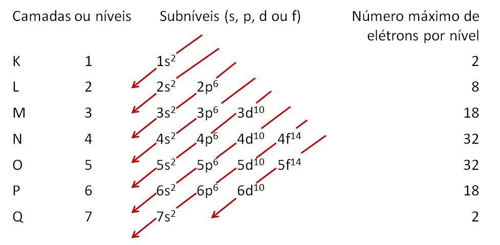

Como funciona a regra do octeto?
A regra do octeto é usado para definir a quantidade de eletóns presente na camada de valência. É mais fácil compreender com a tabela de distribuição eletônica de Linus Paulling. No primeiro período da tabela, os átomos são estáveis com apenas 2 eletróns na camada de valência. Já em elementos do segundo período a valência pode possuir até oito eletróns.
É notável perceber que a partir do terceiro período há adição de mais eletróns, mesmo a estabilidade estando concluída com 8 eletróns. O que é possível dizer que ocorre a expansão do octeto podendo elementos dos períodos 3 e 6 possuírem 18 eletróns na camada de valência e elementos dos períodos 4 e 5, possuírem 32 eletróns.